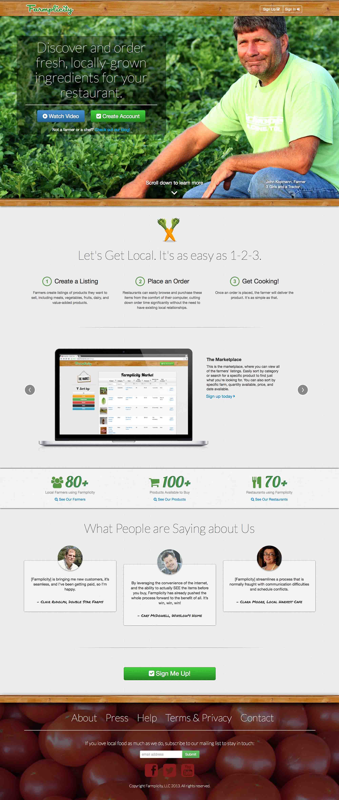

Project: Farmplicity
Title: Co-founder/CEO/Head of Product
Technology: HTML5CSS3jQueryTwitter BootstrapRuby on Rails
Farmplicity is an online marketplace where farmers can sell local ingredients directly to chefs in an easy-to-use virtual farmers market. Farmplicity was founded in January 2013 with the intention of making local ingredients easier to access, thus benefiting local economies and, over time, reducing prices. To date, over 100 farmers and 100 chefs have utilized Farmplicity in the St. Louis market.
